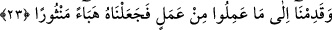

söyleyerek kıyâmetin şiddetinin korkusundan kurtulacaklarını zannederler.
Denir ki: Kureyşlilerin karşısına bir kimse çıktığında ona “__WORD__
” derlerdi.
Böylece o kimsenin kendilerinin Mekke ahâlisinden olduklarını anlamasını ve zarar
vermekten vazgeçmesini isterlerdi. Allah Teâlâ ise onların bu sözü kıyâmet gününde
söyleyeceklerini, fakat hiç bir faydasının olmayacağını haber vermiştir.
23. Onların yaptıkları her bir (iyi) işi ele alırız, onu saçılmış zerreler hâline
getiririz (değersiz kılarız).
“__WORD__ (gelmek)” sefere çıkan bir kimsenin bir müddet sonra dönmesinden ibârettir. “__WORD__ ise pencereden düşen güneş ışığında görülen toz zerreleri demektir. Allah Teâlâ
onların ve dünyada işledikleri sıla-i rahim, muhtaç olana yardım etmek, misâfir
ağırlamak, köle âzâd etmek, yetime ikramda bulunmak gibi îmanla birlikte yapmış
olsalar sevap elde edecekleri iyilik nevinden amellerinin durumunu şöyle bir misalle
anlatmıştır. Bir topluluk sultanlarına muhâlefet edip başkaldırmış, sultan da onların
sâhip oldukları ev, arâzî ve benzerlerine kasdetmiş, onları darmadağın etmiş, tamamen
ortadan kaldırmış ve geride onlardan hiç bir iz bırakmamıştır.
Buna göre mânâ şöyledir: Biz onların amellerine yönelip ele alırız. Kabûlü için
gerekli şart olan îman bulunmadığından onların tamamen geçersiz olduğunu ortaya
koyarız.
Aslında ortada bir şeye gelmek/yönelmek/ele almak ve benzeri bir durum yoktur. Bu
sadece söz konusu durumu bir benzetme ile açıklamaktan ibârettir. Benzer durumlarda
kelimeler aslî mânâlarında kullanılır.
Müşriklerin geçersiz kılınan amelleri önemsiz ve değersizliğini ifâde etmek için toza
benzetilmiştir. Sonra da bunların saçılıp savrulduğu, bir araya getirilmesinin mümkün
olmadığı vurgulanmıştır.
Burada bid‘at ehlinin riyâ ile karışık halde hevâlarına uyarak işledikleri amellerinin
hiç bir izinin olmayacağına ve onlardan hiç bir haber işitilmeyeceğine işâret vardır.
Şeyh Sa‘dî (k.s.) der ki:
İşittim ki henüz bâliğ olmamış bir çocuk oruç tutmuştu.
Yüz türlü sıkıntı içinde kuşluğa kadar sabretti.
Dadısı, gözüne bu küçücük çocuğun ibâdeti büyük göründüğünden,
Onu o gün mektebe götürmedi.
Annesi babası yüzünü gözünü öptüler;
Başına altınlar, bademler saçtılar.
Öğle vakti olunca